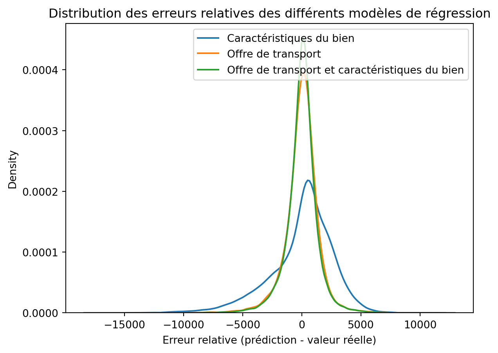

Le but de cette partie est de tester si ce qu’apporte l’ajout du transport pour prédire ta le prix d’un logement
import geopandas as gpdimport pandas as pdimport osif os.getcwd().endswith("notebooks"): os.chdir('..')# Load a sample geospatial datasetgdf = gpd.read_file("cache/results/logements_transport_final.geojson")# Display the first few rows of the GeoDataFrame# ensure every column is shownpd.set_option('display.max_columns', None)print(gdf.keys())gdf = gdf.drop(columns=["adresse", "Commune", "Code commune", "Valeur fonciere","search", "result_score", "point_id", "nearest_bus_stop_id", "nearest_metro_stop_id","nearest_train_stop_id", "nearest_tramway_stop_id"])save_gdf = gdf.copy()
gdf = save_gdf.copy()# on conserve les dates ulterieurs à 2023# conversion en datetimegdf["Date mutation"] = pd.to_datetime(gdf["Date mutation"], format="%d/%m/%Y")print(f"Données comprises entre {gdf["Date mutation"].min()} et {gdf["Date mutation"].max()}")# on ajoute une colonne "Department" à partir des codes postauxgdf["Department"] = (gdf["Code_postal"].astype(int) //1000).astype(str)print(gdf["Department"].value_counts())# gdf = gdf.drop(columns=["Code_postal"])# 3 dataframes pour Paris, Petite Couronne, Grande Couronneparis = gdf[gdf["Department"] =="75"].drop(columns=["Department"])pc = gdf[gdf["Department"].isin(["92", "93", "94"])].drop(columns=["Department"])gc = gdf[gdf["Department"].isin(["77", "78", "91", "95"])].drop(columns=["Department"])
Données comprises entre 2024-01-02 00:00:00 et 2024-12-31 00:00:00
Department
75 16442
77 9453
92 9152
78 8219
91 7764
93 7346
95 7205
94 7025
Name: count, dtype: int64
from sklearn.model_selection import train_test_splitfrom sklearn.pipeline import Pipelinefrom sklearn.impute import SimpleImputerfrom sklearn.preprocessing import StandardScaler, OneHotEncoderfrom sklearn.compose import ColumnTransformerfrom sklearn.ensemble import RandomForestRegressor, RandomForestClassifierimport numpy as npimport pandas as pdfrom sklearn.metrics import mean_squared_error, accuracy_scoredef RF_model(gdf, categorical_cols, numeric_cols, target_col="Valeur foncière au mètre carré", random_state =42, test_size=0.2, use_classifier=False):# filtrage des colonnes utiles df = gdf.copy()# retirer lignes sans target df = df[~df[target_col].isna()].reset_index(drop=True) features = categorical_cols + numeric_cols# pipeline de preprocessing numeric_transformer = Pipeline([ ("imputer", SimpleImputer(strategy="median")), ("scaler", StandardScaler()), ]) categorical_transformer = Pipeline([ ("imputer", SimpleImputer(strategy="constant", fill_value="missing")), ("onehot", OneHotEncoder(handle_unknown="ignore")), ]) preprocessor = ColumnTransformer([ ("num", numeric_transformer, numeric_cols), ("cat", categorical_transformer, categorical_cols), ], remainder="drop") model = RandomForestRegressor(random_state=random_state, n_estimators=150, max_depth=15, min_samples_split=5, n_jobs=1)if use_classifier: model = RandomForestClassifier(random_state=random_state, n_estimators=150, max_depth=15, min_samples_split=5, n_jobs=1) # pipeline complet avec Lasso alpha permet de faire de la sélection de variables pipe = Pipeline([ ("preproc", preprocessor), ("model", model), ])# train/test split X = df[features] y = df[target_col].values X_train, X_test, y_train, y_test = train_test_split(X, y, test_size=test_size, random_state=random_state)# entraînement pipe.fit(X_train, y_train)# évaluation train_score = pipe.score(X_train, y_train) test_score = pipe.score(X_test, y_test)print(f"R² train: {train_score:.4f}")print(f"R² test: {test_score:.4f}") y_train_pred = pipe.predict(X_train) y_test_pred = pipe.predict(X_test) result = {"R²_train": train_score, "R²_test": test_score}ifnot use_classifier: result["MSE_train"] = mean_squared_error(y_train, y_train_pred) result["MSE_test"] = mean_squared_error(y_test, y_test_pred)# print(f"MSE train: {result["MSE_train"] :.4f}")# print(f"MSE test: {result["MSE_test"] :.4f}")else: result["Accuracy_train"] = accuracy_score(y_train, y_train_pred) result["Accuracy_test"] = accuracy_score(y_test, y_test_pred)# print(f"Accuracy train: {result["Accuracy_train"] :.4f}")# print(f"Accuracy test: {result["Accuracy_test"] :.4f}") y_pred = pipe.predict(X)return y_pred, result
On ajoute
# ajout de l'erreur absolue moyenne au dataframe initialcategorical_cols = ["Type local",]numeric_cols = ["Surface reelle bati","Surface terrain","Nombre pieces principales",]numeric_cols_transport = ["nearest_bus_dist_m","nearest_metro_dist_m","nearest_tramway_dist_m","nearest_train_dist_m","nb_routes_tramway_1km","nb_routes_metro_1km","nb_routes_train_1km","nb_routes_bus_1km","nb_stations_tramway_1km","nb_stations_metro_1km","nb_stations_train_1km","nb_stations_bus_1km","passage_journalier_tramway_1km","passage_journalier_metro_1km","passage_journalier_train_1km","passage_journalier_bus_1km",]list_of_results = []model_metadata = [{"short_name":"prix_on_logement","long_name":"Caractéristiques du bien","cat":categorical_cols,"num":numeric_cols,"target":"Valeur foncière au mètre carré","type":"regression", }, {"short_name":"prix_on_transport","long_name":"Offre de transport","cat":[],"num":numeric_cols_transport,"target":"Valeur foncière au mètre carré","type":"regression", },{"short_name":"prix_on_logement_transport","long_name":"Offre de transport et caractéristiques du bien","cat":categorical_cols,"num":numeric_cols + numeric_cols_transport,"target":"Valeur foncière au mètre carré","type":"regression", } ]for metadata in model_metadata:print(metadata["long_name"]) use_classifier = metadata["type"] =="classification" y_pred, result = RF_model( gdf, metadata["cat"], metadata["num"], target_col=metadata["target"], random_state=42, test_size=0.2, use_classifier=use_classifier ) gdf["relative_error_"+ metadata["short_name"]] = y_pred.astype(float) - gdf[metadata["target"]].astype(float) list_of_results.append({"model": metadata["long_name"], **result})# absolute errorsfor col in gdf.keys():if col.startswith("relative_error_"): gdf["absolute_"+ col[9:]] = gdf[col].abs()# table of R²r2_table = pd.DataFrame(list_of_results)r2_table[["model", "R²_train", "R²_test"]].rename(columns={"model": "Regresseurs"})
Caractéristiques du bien
R² train: 0.3386
R² test: 0.2544
Offre de transport
R² train: 0.8212
R² test: 0.6973
Offre de transport et caractéristiques du bien
R² train: 0.8486
R² test: 0.7165
Regresseurs
R²_train
R²_test
0
Caractéristiques du bien
0.338568
0.254436
1
Offre de transport
0.821217
0.697260
2
Offre de transport et caractéristiques du bien
0.848639
0.716517
On constate que les caracteristiques du logement seules ne suffisent pas (normal, elles sont très peu completes)
# affichage la distribution des erreurs absolues avec seabornimport seaborn as snsax = sns.kdeplot(gdf["relative_error_prix_on_logement"], fill=False, label="Caractéristiques du bien")sns.kdeplot(gdf["relative_error_prix_on_transport"], fill=False, label="Offre de transport", ax=ax)sns.kdeplot(gdf["relative_error_prix_on_logement_transport"], fill=False, label="Offre de transport et caractéristiques du bien", ax=ax)ax.set_xlabel("Erreur relative (prédiction - valeur réelle)")ax.set_title("Distribution des erreurs relatives des différents modèles de régression")ax.legend()

Lorsqu’on n’utilise que les caractéristiques du logment (Surface, taille du terrain, nombre de pièces) le modèle sous-estime le prix des logements du centre de paris et sur-estime ceux des banlieux.
# ,{# "short_name":"code_postal_on_logement_transport",# "long_name":"Prediction code postal avec caractéristiques du bien et de transport",# "cat":categorical_cols,# "num":numeric_cols + numeric_cols_transport,# "target":"Code_postal",# "type":"regression",# },{# "short_name":"prix_on_code_postal",# "long_name":"Prediction prix au m² avec code postal",# "cat":["Code_postal"],# "num":[],# "target":"Valeur foncière au mètre carré",# "type":"regression",# },{# "short_name":"prix_on_code_postal_logement",# "long_name":"Prediction prix au m² avec code postal et caractéristiques du bien",# "cat":["Code_postal"] + categorical_cols,# "num":numeric_cols,# "target":"Valeur foncière au mètre carré",# "type":"regression",# }
Lorsqu’on ajoute l’offre de transport (avec ou sans les caractéristiques du logement) le modèle sous-estime le prix des logements à l’Ouest de Paris et surestime ceux à l’est.
On remarque en particulier la Seine-Saint-Denis qui est un département bien desservi, mais peu cher. Pour faire de meilleures predictions, il est donc nécessaire d’ajouter des données supplémentaires expliquant ce genre de phénomènes.